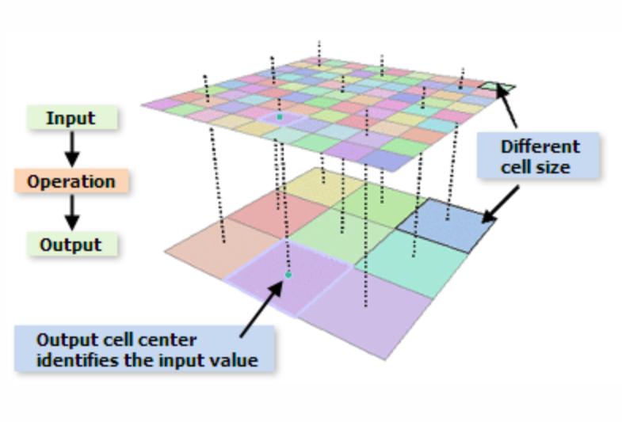
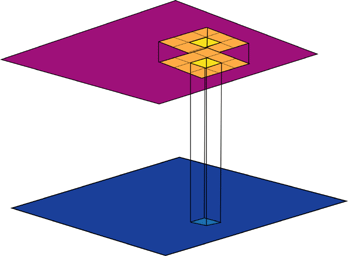
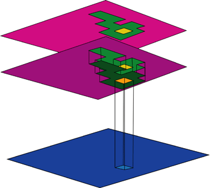

Resampling + scope
Resampling
Resampling changes a raster’s cell size (or alignment). You typically resample when:
- Aligning multiple rasters before overlay / map algebra.
- Changing resolution for performance or analysis needs.
Important: use nearest neighbor for categorical data; use bilinear/cubic for continuous data.
Resampling diagram
Spatial scope of raster operations
Raster functions can be categorized by the spatial extent used to compute each output cell:
- Local: output cell depends only on the input cell(s) at the same location.
- Focal: output cell depends on a neighborhood window around the cell.
- Zonal: output depends on the zone the cell belongs to (and statistics within that zone).
- Global: output depends on the entire raster (or a very large region), e.g., distance transforms.
Local (cell-by-cell)

Focal (neighborhood)
Zonal (within zones)
Check yourself: which scope is it?
Pick the scope that best matches each scenario, then click Check.
Scenario A: Add two rasters together cell-by-cell (e.g., elevation + sea-level-rise).
Scenario B: Smooth a raster using a 3×3 mean filter.
Scenario C: Compute mean elevation within each watershed polygon.
Scenario D: Compute Euclidean distance to the nearest hospital for every cell.